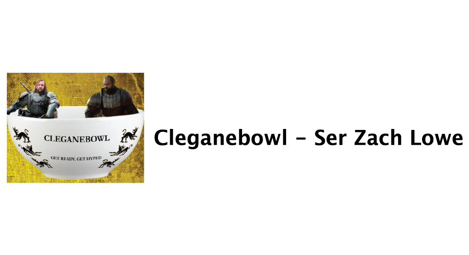
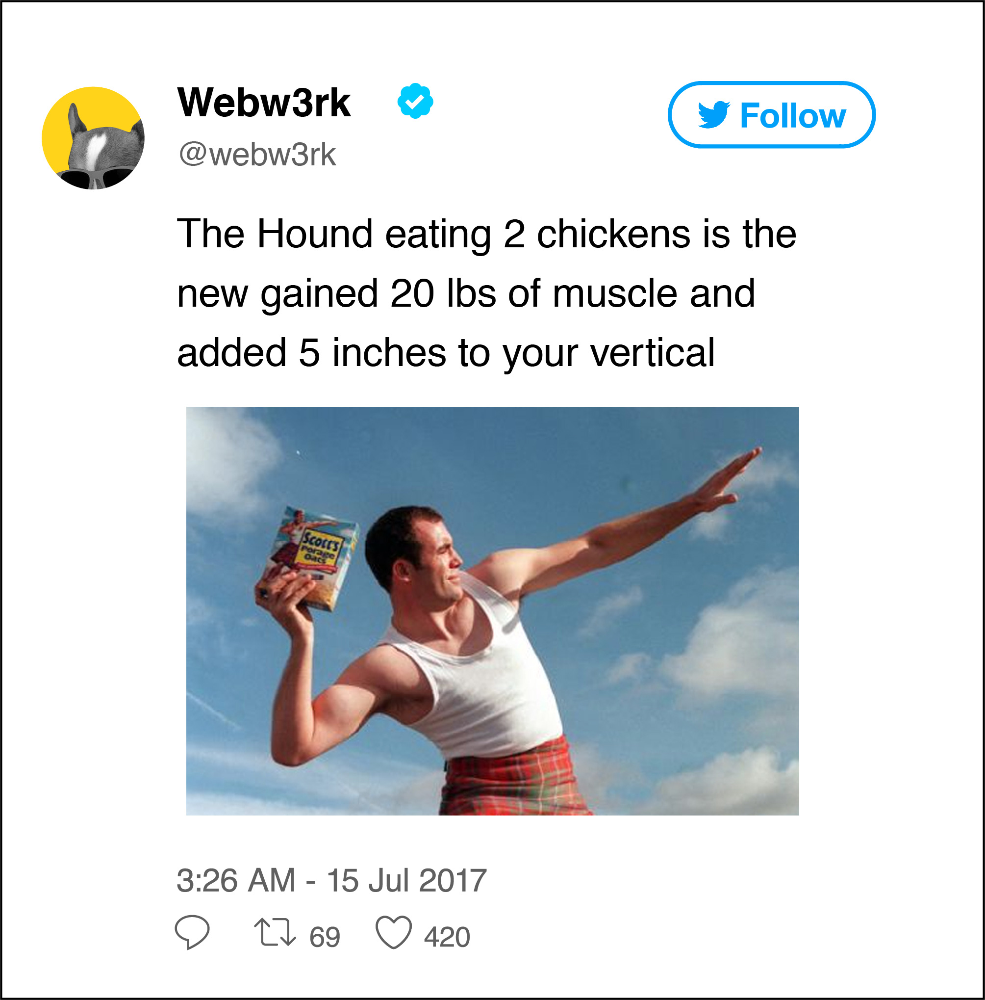

.png)
.png)
.png)
.png)
.png)
.png)
.png)
.png )
.png)
.png)
.png)
.png)
.png)
.png)


Let’s talk Clegane Bowl! Hype for this matchup has been tossed around longer than Gendry’s rowboat. There’s so much to dig into – The Mountain is undefeated at home in King’s Landing, The Hound has the best road record over two seasons, Lannister coaching shakeups – this is a matchup built for purists and casuals alike. Did I mention it’s a rivalry game? Someone find Gendry! If you don’t know by now, (how do you not know!?) Sandor and Gregor Clegane are brothers. They’re like the Lopez twins without the geekiness, or the Gasols if they hated each other. They jostled for minutes on the same AAU team, Clegane Keep Preparatory Academy, which is a trivia night fun fact that my colleague Petyr Baelish has discussed ad nauseum. These two have been competing with each other since they could walk. And they have great nicknames! Seriously, has there ever been a better nickname than The Hound?
THE HOUND
According to sources close to the team, former GM Tywin only gave Clegane one hour to decide his future before he fled The Battle of Blackwater. The Hound hasn’t confirmed this story, but it became clear that his customary confidence was shaken, and he struggled after leaving King’s Landing. Until recently:
Who let the dog out? He’s in the middle of a resurgence, stringing together relaxed, decisive performances and finally demonstrating the consistency expected from a former franchise cornerstone. His in-combat IQ is second only to Jon Snow (pretty darn savvy despite what former teammate Ygritte would have you believe). The game has slowed down for him, allowing him to remain effective even as his athleticism begins to decline.
A lot of people, including me, had written him off after his failed stint with rising star Arya Stark, but he’s thriving with the Brotherhood. Beric Dondarrion and Thoros of Myr have done a great job creating space for him to operate. They’re saying all the right things:

His new teammates trust him. Beric D hasn’t had to sacrifice his game. He’s poised for his best season since the We Believe years. They embraced the Sandor reclamation project, and it’s paying dividends. It also doesn’t hurt that Clegane is in maybe the best shape of his life:
THE MOUNTAIN
And then there’s The Mountain...
Prime Mountain was unstoppable. His armor will hang next to the banners in the rafters of the Red Keep. He rolls out of bed and dominates. Look at the sheer force and angle of his downstroke in the clip. How do you stop that?
He may singlehandedly be the antidote to pace-and-space. He’s humongous, and he’s quick for his size – he will be able to switch onto the perimeter for brief stretches of a fight. If he can channel his intensity and avoid picking up needless fouls (he’s picked up more technicals than anyone over his career), it’s hard to bet against him.
The Lannisters were criticized for letting Cersei GM and coach the team after her father Tywin stepped down, but she’s done a mostly great job. She upgraded the medical staff and expanded Gregor’s role, revitalising his career. They’ve found ways to phase out responsibilities for the aging Kingslayer, and they even have a shot at the splashy Euron Greyjoy in free agency! If they pick up Euron, they’re poised to make one more run with a strange, intriguing veteran roster, realistic if Clegane is willing to take the hometown discount.
PREDICTION
Expectedness hasn't diminished the fun; the collection of story lines and elite talent has this match up poised to draw unprecedented ratings, and the ride itself has been wildly unpredictable to this point.
But this clip is what makes this forthcoming series so exciting: it is an intense, old-school rivalry. These guys hate each other. There’s bad blood. They understand what is coming, and how to respond, and the responses to the responses. Now it's about execution, crunch time mettle, and a little bit of luck. It’s going to be close. Greg is posting historic TS (true-sword) percentages. He’s finishing plays. But the key to the series lies on the defensive end – Sandor can guard Gregor, but I’m not so sure that Gregor can guard Sandor for an entire matchup. He has a chance to be disruptive with his giant wingspan, but if that’s not enough, I fully expect The Hound to capitalize. Hound in 7.
"I wasn’t supposed to be here...”
Sandor Clegane is a man of few words. This the first thing he tells me. To say that hetells me this happily would be a gross overstatement. His shoulders cut a massive figure - even sitting down he is taller than I am standing. Our table underway is comically small beneath his hunkered frame. Our ship is heading west from Dragon Stone to King’s Landing. Sandor famously left King’s Landing without so much as a raven to his former Lannister teammates. He hasn’t been back since.
“What are you expecting when you return?” I ask him.
“Mostly boos,” he tells me.
Just four seasons ago, Sandor left behind a potential dynasty. Fans unceremoniously burned his armor in the streets. His parting words – “F--k the King” – signaled the end of an era. Looking back, the collection of talent was undeniable, but the fit was never quite right. Clegane failed to mesh with teammates, sharing minutes with All-Star free agent Bronn and clashing with Joffrey’s leadership style. He avoided council meetings. And then, probably the lowpoint of his professional career happened.
Blackwater
Uncoachable, quitter, choker – the narrative turned. He was never a knight obsessed with legacy, but his reputation splintered under the weight of the 24-hour raven cycle. He lost endorsements with Hotpie Bakeries and the Iron Bank.
He needed a fresh start. He tested the market, signing with future all-star Arya Stark to form his own “super-team”. There were glimpses of the duo’s potential, but they never found the consistency fans envisioned.
“With Arya, she just wanted to kill me all the time,” he chuckles.
Arya is notoriously competitive. Tales of her work-ethic are otherworldly – last offseason she traveled to Braavos to train with the legendary Jaqen H’ghar, arguably the greatest international player the game has ever seen. Sandor, on the other hand, prefers to practice privately. Only Sandor’s brother, Gregor, is said to have a worse attitude towards training camps (Gregor famously said, “Hurt on company time, rehab on company time”). So while Arya and Sandor fit on paper, whether or not they would ever put it together became a point of contention.
And then, when it looked like they were on the cusp of figuring it out, Sandor suffered a season-ending injured. His game went over a cliff. He unraveled in the final minutes of an end-of-season matchup with The Sapphire Flyer, Brienne of Tarth, leading many to believe he would retire in the offseason.
“Short f--king retirement, that.”
Now, a year later, he’s in the midst of a resurgence. The Brotherhood offered him a 10-day contract, eventually gambling on a cap-friendly two-year deal with a team-option. Sandor, in his seventh season, shows signs of being a max player again. These days, there is a somber maturity beneath the gruff exterior. Unlocking it is not for the faint of heart. I pry, but it’s like trying start a conversation with a 250-pound rottweiler.
“You’re a talker,” he says to me.
He won’t discuss his brother, or the fire, or his scars. He looks strong. He has revamped his diet, one of the few things he was actually excited to discuss with me.
“I love it, I get hungry, so I love it. I eat at least two chickens every meal. Wash it down with an ale,” he says, a charismatic grin betraying his usual snarl.
He moves through our interview at his own speed, but I sense I’ve begun to win him over when he starts to casually use the “c” word.
“A lot of c--ts have knights fawning over them from the cradle. I never squired. It’s shit work. High-born lads. Every lord I ever met was a c--t. I wore Gregor’s hand-me-downs. So the whole process was discouraging, definitely. But like I said, I wasn’t even supposed to be here. I’m on a boat with a bunch of Eastern Conference all-stars. And I understand that it’s a business. Loyalty? Where the F--K’S loyalty? Lannister advising the Targaryen girl. Wildling and Northerner. I fought for the king, and did the king fight for me?”
“Let’s talk Cleganebowl, specifically. Do you realize this is the most hyped matchup in recent memory, maybe ever? Do you read the ravens?” I ask him.
“I don’t read the words that come pouring out of your c--t mouths!” he laughs.
The work continues. This is a man, nay, a dog, with nothing to lose, elite teammates, and everything to gain against a brother who is barely there. Hype the door.